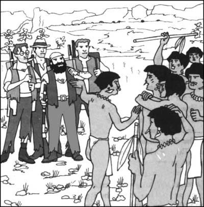

10
Listen to Part 1:

Trận chiến
Tối hôm đó chúng tôi đã có một giấc ngủ ngon lành. Chúng tôi an toàn trong căn trại của mình. Sáng hôm sau, chúng tôi bắt đầu cuộc hành trình tới các hang động dành cho người da đỏ. Chúng tôi quyết định băng qua cao nguyên rồi vòng quanh hồ.
Chúng tôi đi qua khu rừng. Bốn người da đỏ đi trước, rồi đến hai giáo sư. Chúa tể Roxton và tôi đi sau cùng, mang trên vai những khẩu súng. Nhưng chúng tôi không thấy bất kỳ Người vượn nào.
Những người da đỏ nhỏ thó, khỏe mạnh với khuôn mặt tử tế, thân thiện. Tôi rất thích họ. Họ trò chuyện với nhau nhưng chúng tôi không hiểu họ nói gì. Một trong những người da đỏ là một thanh niên trẻ tuổi. Anh ta đi trước những người khác và bảo họ phải làm gì. Có lẽ anh ta là một hoàng tử hoặc một vị vua trẻ tuổi.
‘Làm sao mà người da đỏ lên được cao nguyên này?’ Chúa tể Roxton hỏi.
‘Tôi nghĩ là khủng long và Người vượn đã sống trên cao nguyên này trước tiên’, Giáo sư Challenger trả lời. ‘Những người da đỏ đến sau. Họ leo lên cao nguyên từ phía dưới – có lẽ họ đã đi cùng một con đường giống Maple White. Có lẽ họ đang tìm kiếm thức ăn.
‘Họ quyết định sống trong các hang động. Họ có thể an toàn trước khủng long ở đó. Khủng long quá to không thể vào trong hang. Vì thế Người vượn là kẻ thù tệ hại nhất của người da đỏ.’
Giáo sư Summerlee lắc đầu. ‘Không, Challenger,’ ông ta nói. ‘Tôi không đồng ý với ông. Tôi nghĩ rằng …’
Nhưng tôi không nghe Giáo sư Summerlee nói. Tôi nhìn thấy có thứ gì đó chuyển động trong các tán cây phía trên. Tôi nhanh chóng nhảy lùi lại nhưng đã quá muộn.
Hai cánh tay dài đỏ lòm từ trên cây xà xuống. Hai bàn tay to khổng lồ phủ đầy lông bám chặt quanh cổ và mặt tôi. Đôi tay khỏe mạnh nhấc tôi khỏi mặt đất.
Listen to Part 2:
Tôi không kêu lên được. Một khuôn mặt gớm ghiếc đang nhìn tôi chằm chằm. Một khuôn mặt có đôi mắt màu xám hung dữ và những chiếc răng lớn. Tôi không thể cử động được. Tôi không thể thở. Từ đằng xa, tôi nghe thấy tiếng súng nổ. Rồi tôi bị thả xuống đất và mọi thứ tối đen.
Chúa tể Roxton đánh thức tôi. Ngài đang rửa mặt cho tôi bằng nước lạnh. Hai vị giáo sư đứng gần đó.
‘Cảm ơn Chúa trời, ông vẫn ổn, Malone!’ Chúa tể Roxton nói. ‘Chúng tôi nghĩ ông đã chết rồi. Một Người vượn đã bắt được ông. Nó thả ông ra khi tôi bắn vào nó.’
Giờ chúng tôi biết rằng Người vượn đang theo dõi chúng tôi. Chúng tôi vội vàng băng qua khu rừng. Vào lúc xế chiều chúng tôi đến hồ. Những người da đỏ reo lên và chỉ tay xuống mặt nước.
Chúng tôi nhìn thấy một cảnh tượng tuyệt đẹp. Nhiều chiếc xuồng đang hướng về chúng tôi từ phía bên kia hồ. Trên những chiếc xuồng chở đầy người da đỏ. Họ mang theo giáo mác, cung tên.
Những chiếc xuồng đến bờ hồ và những người da đỏ nhảy xuống. Họ chạy về phía chúng tôi. Một trong số họ là một cụ già. Ông mặc quần áo da động vật và một chiếc vòng cổ làm bằng những hạt cườm to. Ông ôm lấy chàng trai trẻ da đỏ.
‘Thì ra chàng trai trẻ là con trai của tù trưởng’, Chúa tể Roxton nói.
Tù trưởng người da đỏ hỏi con trai mình rất nhiều câu hỏi. Họ trò chuyện rất lâu. Rồi ông ấy đến và ôm chặt từng người chúng tôi. Ông rất vui vì con trai mình vẫn còn sống.
Nhưng vị hoàng tử trẻ tức giận. Anh ta nhiều lần chỉ tay vào các khu rừng xung quanh. Anh ta bắt đầu nói chuyện với mọi người của mình. Chúng tôi không hiểu anh ta nói gì. Nhưng chúng tôi có thể hiểu anh ta muốn làm gì.

Listen to Part 3:
‘Các bạn của tôi ơi’, anh ta nói, ‘chúng ta không thể trở về nhà được. Tôi vẫn còn sống nhưng những người khác đều đã chết. Chúng ta sẽ không bao giờ có thể an toàn trước kẻ thù của mình là Người vượn được. Vì vậy chúng ta phải giết chúng ngay bây giờ.’
Anh ta chỉ tay vào chúng tôi. ‘Những người đàn ông kỳ lạ này là bạn của chúng ta. Họ sẽ giúp chúng ta. Họ cũng căm ghét Người vượn. Chúng ta hãy cùng nhau sát cánh chống lại kẻ thù. Chúng ta sẽ giết chúng hoặc tự chết.’
Anh ta nói xong. Những người da đỏ reo hò và cổ vũ. Họ vung giáo về phía trước. Họ đã sẵn sàng chiến đấu.
‘Họ rất dũng cảm’, Chúa tể Roxton nói. ‘Tôi sẽ giúp họ. Tôi sẽ chiến đấu với Người vượn. Malone, ông sẽ đi chứ?’
‘Tất nhiên’, tôi nói.
‘Còn tôi nữa’, Giáo sư Challenger nói.
‘Còn ông, Summerlee thì sao?’, Chúa tể Roxton hỏi.
‘Tôi là một nhà khoa học’, Giáo sư Summerlee nói. ‘Tôi không phải một chiến binh. Nhưng, được, tôi sẽ đi cùng các ông.’
‘Tốt’, Chúa tể Roxton nói.
Con iguanodon có một vòng nhựa trên da. Trong vài phút con iguanodon bị giết. Họ xẻ thịt rồi nấu chín.
Listen to Part 4:
Hai vị giáo sư rất thích thú với hồ nước tuyệt đẹp. Họ quan sát mặt nước nhiều giờ liền. Chúng tôi thấy thêm nhiều sinh vật lạ nữa từ xa ngoài hồ.
Nhưng trong rừng Người vượn lại là những chiến binh thiện chiến hơn người da đỏ. Chúng ẩn núp trên cây và tấn công người da đỏ.
Chúng tôi trở về trại đầu tiên bên rìa cao nguyên. Chúng tôi gọi Sancho. Ông ta trèo lên đỉnh đá cao. Ông ta đã nghe tiếng ồn ào của trận chiến.
‘Đi khỏi nơi khủng khiếp này ngay đi’, ông ta la lên.
‘Sancho nói đúng’, Giáo sư Summerlee nói. ‘Challenger, hãy nhớ lời hứa của ông. Hãy tìm một cách để chúng tôi rời khỏi Thế giới đã mất này. Chúng tôi đã có đủ cuộc phiêu lưu rồi.’
Mục lục
- Bìa sách
- Trang bìa
- Trang bản quyền
- Mục lục
- Lưu ý về tác giả
- Lưu ý về truyện
- Những nhân vật trong truyện
- 1 Tôi gặp Giáo sư Challenger
- 2 Câu chuyện của Giáo sư
- 3 Chúng tôi bắt đầu hành trình
- 4 Sông Amazon
- 5 Một chuyện khủng khiếp xảy ra
- 6 Sinh vật từ thời tiền sử
- 7 Cái chết trong đêm
- 8 Hành trình rùng rợn
- 9 Những tù nhân của Người Vượn
- 10 Trận chiến
- 11 Thoát khỏi Thế giới đã mất
- 12 Chúng tôi trở về London
- Điểm giúp hiểu bài